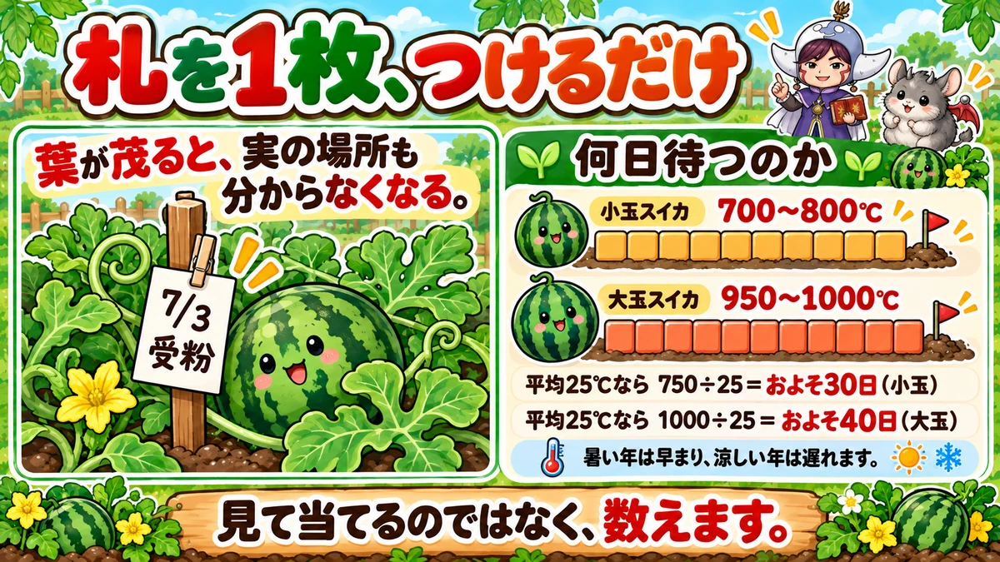
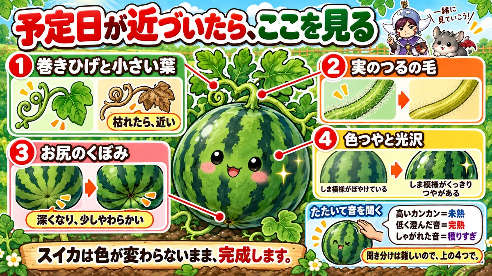
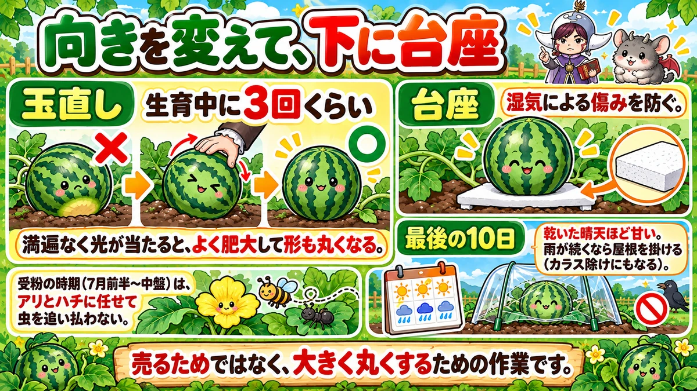

The harvest date was set on the day it was pollinated 🍉 Tie a label on and count

🍉 "I cut it open and it was still white inside."
🍉 "I decided to wait a bit longer and it split."
🍉 "The leaves are so thick I can't find the fruit."
Hello, I'm Eiko. Eight years of growing vegetables organically and without pesticides, and a teaching licence in science.
Watermelon is, I think, the hardest crop in a home garden for knowing when to pick.
A tomato reddens. A cucumber tells you by size. A watermelon finishes almost without changing colour or shape.
The headline:
The harvest date was decided on the day it was pollinated.
You don't guess by looking. You tie on one label, and you count.
Keep three or four vines
Same thinking as squash. Pinch the main vine at five or six true leaves; laterals appear, and keep the three or four strongest. Cut the rest — fewer vines, bigger fruit.
You can calculate the harvest date

What this diagram says （図解の文字）
- Just tie on one label
- "Once the leaves thicken you can't find the fruit either" — a label reading a date, and "pollinated"
- How long to wait: small type 700–800 °C ／ large type 950–1000 °C
- "At an average of 25 °C, 750 ÷ 25 = about 30 days (small type)"
One label
Write the pollination date on a piece of paper and attach it to the vine near the fruit. I use a clothes peg and paper, and a permanent marker.
It also marks the spot
A second benefit: once the foliage thickens you genuinely cannot find the fruit.
So I push a short stick in beside the fruit and hang the dated label on that. From a distance you can see "there's one here".
How long to wait
A watermelon has a fixed accumulated temperature from pollination to ripeness:
- Small-fruited types — 700–800 degree-days
- Large-fruited types — 950–1000 degree-days
Accumulated temperature means the daily mean temperature, added up day by day.
In days
Take a summer month averaging 25 °C (77 °F):
- Small: 750 ÷ 25 ≈ 30 days
- Large: 1000 ÷ 25 ≈ 40 days
So a small watermelon pollinated at the start of July is ready in early August.
Heat brings it forward
A guide, of course. A heatwave brings it forward; a cool spell pushes it back.
For precision, put a max–min thermometer in the plot and compare with the official figures — if your plot runs 3 °C warmer, add 3 °C every day.
I don't go that far. Write the date, count 30 or 40 days. It's close enough.
Four things to look at

What this diagram says （図解の文字）
- As the date approaches, look here
- 1 "the tendril and the small leaf" — "withered means close"
- 2 "the hairs on the fruit's stem"
- 3 "the dimple on the base" — "deeper, and slightly soft"
❶ The tendril and the small leaf
Look where the fruit's vine joins the main vine. There's a tendril and a small leaf there. When those two wither, harvest is close.
❷ The hairs on the fruit's stem
Look closely at the stem carrying the fruit: it's covered in fine hairs. When those disappear and the stem yellows, that's another sign.
❸ The dimple underneath
Lift it and look at the end opposite the stalk. There's a dimple. It deepens, and gives slightly when pressed.
❹ Colour and gloss
The stripes become distinct and the surface takes on a shine. Hard to put into words — the pattern goes from blurred to sharply defined.
And the same reading works for squash and melon. A melon also gives off scent, which helps. A watermelon doesn't smell at all.
During pollination, leave the insects alone
This surprises people: watermelons are pollinated by ants and bees.
Which means the pollination weeks are a period when you want insects working.
So through that stretch I stop using deterrents and stop hand-picking. I watch the ants going between male and female flowers and leave them to it.
Leaf-eating pests are a separate matter, of course. But don't reflexively drive everything away.
You won't know for a while whether it took
Also worth knowing: you can't tell whether pollination succeeded until the fruit is about the size of a hen's egg.
- Yellowing within a few days = it failed
- Until it passes egg size, it can still drop
Don't relax because one has set. Secure several.
Turning the fruit, and the finish

What this diagram says （図解の文字）
- Turn it, and put a support underneath
- "Turning — about three times during growth"
- "Even light means better swelling and a rounder shape"
- "A support prevents damage from damp"
- "The last ten days — dry…"
Turn it three times
Left flat on the soil, the face in contact stays yellow. So turn the fruit during growth — about three times is enough.
"I'm not selling them" — I thought that too. But a fruit lit evenly swells better and comes out rounder, and it shows in the flavour. Good value for the effort.
Put something underneath
Set the fruit on a support — a scrap of polystyrene is plenty. Lifting it off the soil prevents damp damage.
The last ten days decide the flavour
Dry, sunny weather in the ten days before harvest makes a watermelon sweet.
Continuous rain makes it watery, and at worst it splits.
So if the forecast ten days before your date is full of rain, rig a small plastic roof over the fruit. It keeps the crows off too — I've saved two that way.
Science bit: it's adding up temperature 🔬
Why temperature rather than days?
What happens inside a plant is chemistry — and chemical reactions run faster when it's warmer.
Unlike us, a plant's body temperature is simply the air temperature.
So: a day at 30 °C advances things further than a day at 20 °C. Adding up temperature is more accurate than counting calendar days.
"Watermelons are early in a hot summer" isn't an impression — it's the arithmetic.
And it isn't only watermelon: degree-days are used to predict harvest in sweetcorn, rice and fruit crops. Farming isn't purely intuition — a good deal of it can be added up.
To sum up
- ✅ 1 m spacing; pinch the main vine at 5–6 leaves and keep 3–4 laterals
- ✅ Write the pollination date on a label and attach it
- ✅ The label also marks where the fruit is
- ✅ Small: 700–800 degree-days. Large: 950–1000
- ✅ At 25 °C average, about 30 and 40 days
- ✅ Signs: withered tendril, hairless yellowing stem, deeper dimple, sharp glossy stripes
- ✅ Tapping is hard. Use the four signs
- ✅ During pollination, leave the ants and bees alone
- ✅ You can't tell it took until egg size
- ✅ Turn it three times; stand it on a support
- ✅ Dry weather in the last ten days makes it sweet — roof it if rain is forecast
You don't have to do all of it. The day you spot a pollination, tie on one label. That alone reduces the number of disappointing cuts 🍉
Thank you for reading!